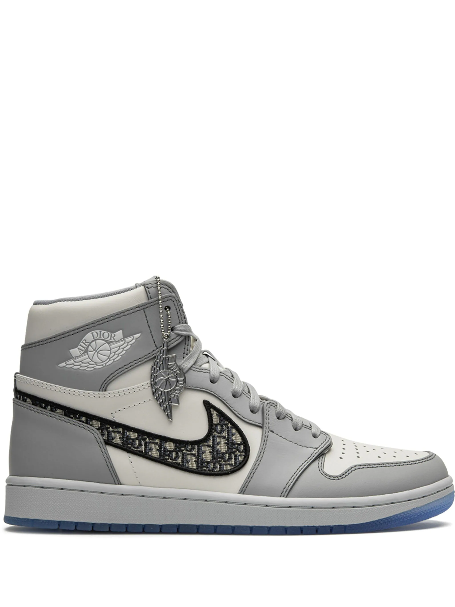
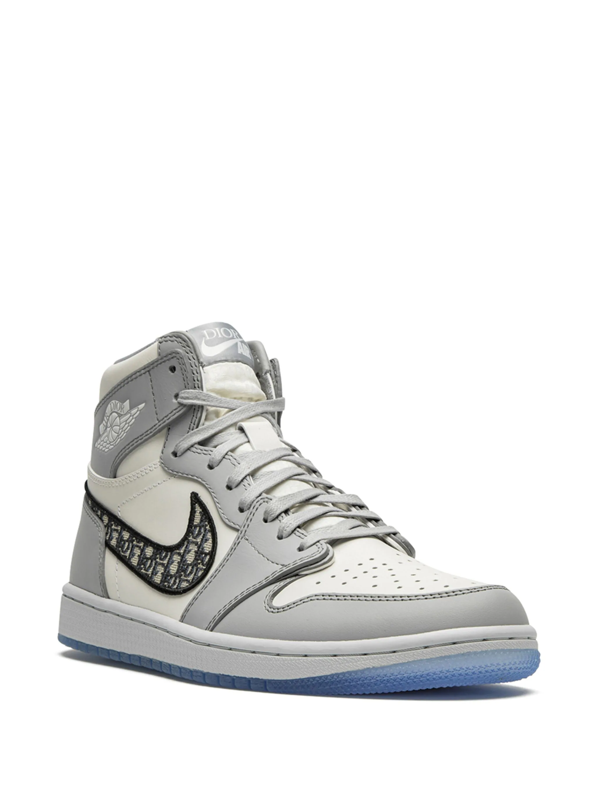

Jordan
Sneakers alte Jordan x Dior Air Jordan 1
Prezzo: 22.705 €
Colore: Grigie
DESCRIZIONE
Punta tonda, suola piatta in gomma, chiusura frontale con lacci, soletta con logo, motivo con monogramma e altezza alla caviglia. Questi modelli sono prodotti da un marketplace di sneakers unico. Offrendo solo le migliori calzature, presenta alcune delle sneakers più rare, provenienti da tutto il mondo.
Composizione
|  |  |